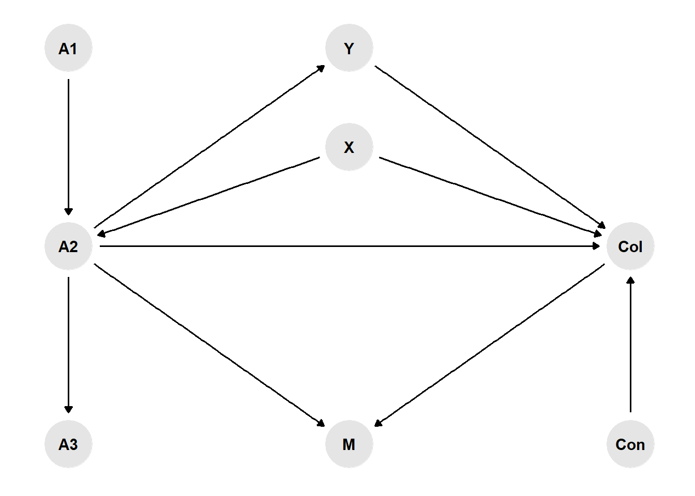
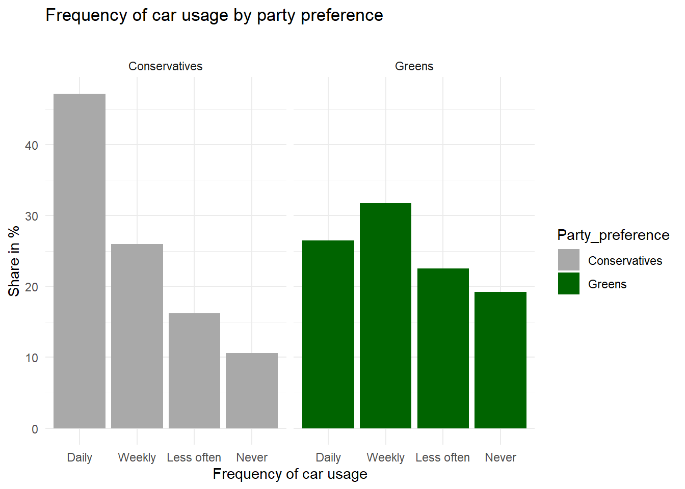
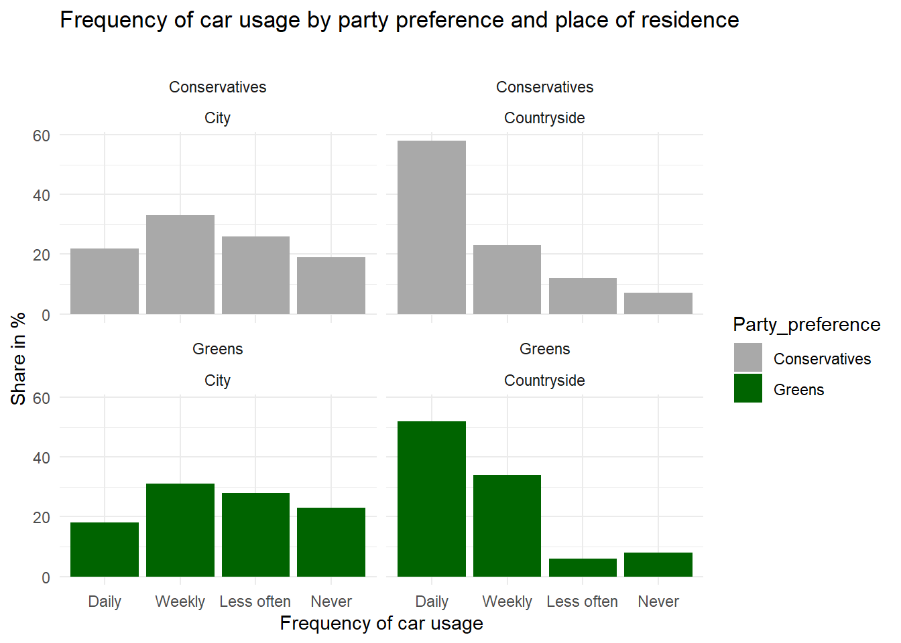
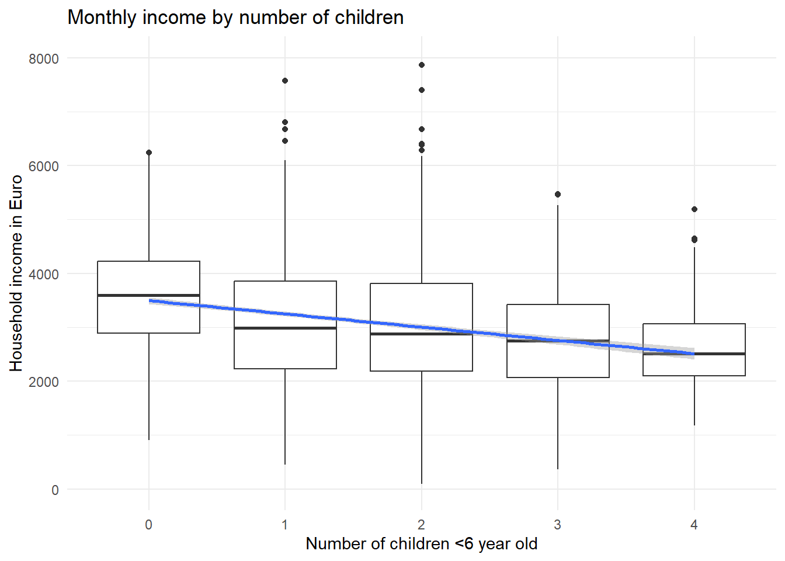
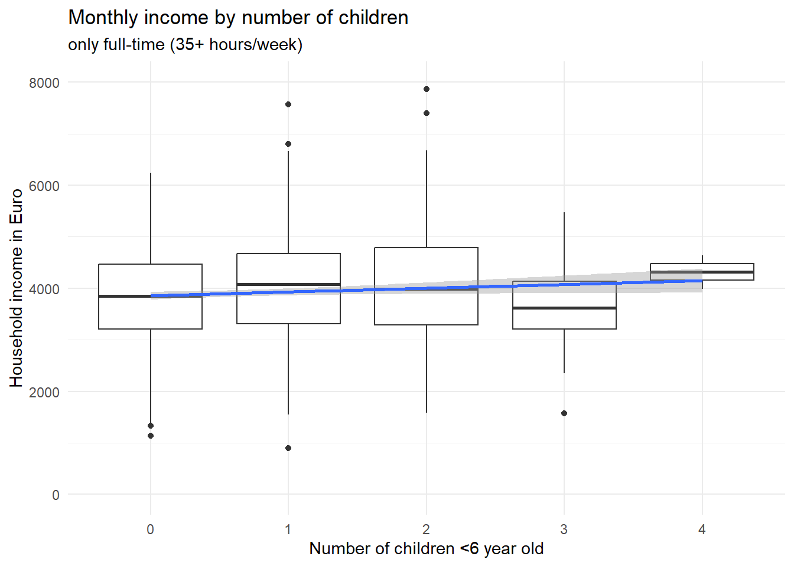
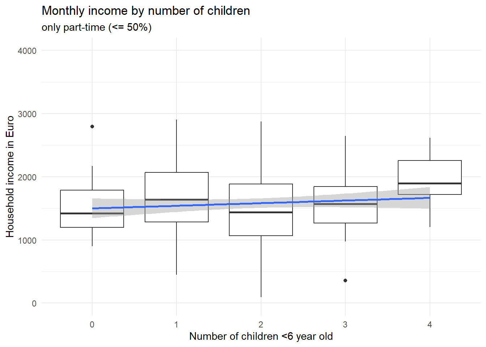

Hello everybody. here we are with my usual monthly update. Today, similarly to last time, I would like to talk about a bit about classical statistical analysis problems, such as those which I find myself routinely explaining to my students. To all health economists who were looking for some more HTA-related content I, once again, apologise and ask them to tune in next time in case what I will talk about today is not of their interest. The main reason why I wanted to go back to this topic is that I am currently teaching a classical stats course for 3rd year medical students who seem to be a bit confused about some basic stats terminology with reference to regression analysis. As usual, I take the opportunity to write here in order to also help myself in making these concepts as clear as possible so to be able to effectively communicate them to my students. I hope some of you may find this topic interesting as much as I do.
So, the topic today will be the distinction between different types of independent variables which are often use as covariates within a regression framework. More specifically, there is quite a big literature work on the distinction between three general categories of covariates: confounders, colliders, and moderators. Based on this classification, there has also been quite a discussion on whether an adjustment for the effects of such variables on the influence of the main determinant on the outcome is needed, depending on the type of analysis/research question formulated.
Let’s see if I am able to make these concepts clear and provide some general suggestions on whether and if an adjustment for these variables is needed in a standard statistical analysis. As usual, let me start with an example, mostly inspired from another publicly available simulation example that can be found here.
Causal relationships between variables
Consider a directed acyclic graph (DAG) representation of how a researcher would think the variables in their model to be connected to each other, where the presence of an arrow between two variables implies a causal effect from the first to the second variable. For example, let’s consider the task of performing an analysis using observational data where \(X\) is the variable of interest or main determinant (e.g. has the individual been vaccinated - yes/no), and \(Y\) is the outcome (e.g. death- yes/no). In addition, consider the presence of the following variables in the researcher’s dataset:
A confounder variable “Con” (Confounder),
A collider variable “Col” (Collider),
A mediator variable “M” (Mediator)
Depending on which effect the researcher wants to focus on, a decision has to be made on which other variables should be left out from the analysis graph (A1-A3), given that they are not related to both \(X\) and \(Y\). Indeed it is important to not just casually throw variables into the models, e.g. control for all kinds of socio-demographic or economic variables per default, when in fact many of these cannot even plausibly affect \(X\) and \(Y\).
Here the R code I used to generate the graph:
library(dagitty)library(ggdag)library(ggrepel)library(dplyr)set.seed(1234)g <-dagify(Y ~ X, X ~ A1, A2 ~ X, Y ~ M, M ~ X, Col ~ X, Col ~ Y, Y ~ A3, Y ~ Con, X ~ Con,exposure ="X",outcome ="Y",coords =data.frame(x=c(5,1,1,1,3,3,5,3),y=c(1,1,2,0,2,0,0,1.5),name=c("Y","X","A1","A2","M","Col","A3","Con")))g %>%ggplot(aes(x = x, y = y, xend = xend, yend = yend)) +geom_dag_point(col="grey90") +geom_dag_edges() +geom_dag_text(label=c("A1","A3","Con","M","X","Y","A2","Col"),col ="black") +theme_dag()

Now, let’s see how we can identify each type of variable and decide on whether we should adjust for it or not in our analysis.
Confounders
In the vaccination example above, age is a so-called confounding variable as it affects both \(X\) as well as \(Y\). Here is another example with some data to illustrate the confounding concept. Green parties have been on the rise in many European countries lately, and you might wonder whether Green voters actually behave more environment-consciously as opposed to voters of Conservative parties. Here are (fake) survey results about mobility and party preference:
library(tidyverse)d <-data.frame("Party_preference"=rep(c(rep("Conservatives", 4), rep("Greens", 4)),2),"Place_of_residence"=c(rep("City",8), rep("Countryside",8)),"Car_usage"=c(22,33,26,19,18,31,28,23,58,23,12,7,52,34,6,8),"Frequency"=rep(c("Daily", "Weekly", "Less often", "Never"),4),"Weight"=c(.30,.30,.30,.30,.75,.75,.75,.75,.70,.70,.70,.70,.25,.25,.25,.25))d$Frequency <-factor(d$Frequency, levels =unique(d$Frequency))d$Car_usage_weighted <- d$Car_usage*d$Weightggplot(d, aes(x=Frequency,y=Car_usage_weighted,fill=Party_preference)) +geom_col() +theme_minimal() +scale_fill_manual(values=c("darkgrey","darkgreen")) +xlab("Frequency of car usage") +ylab("Share in %") +ggtitle("Frequency of car usage by party preference",subtitle ="") +facet_wrap(~Party_preference)

ggplot(d, aes(x=Frequency,y=Car_usage,fill=Party_preference)) +geom_col() +theme_minimal() +scale_fill_manual(values=c("darkgrey","darkgreen")) +xlab("Frequency of car usage") +ylab("Share in %") +ggtitle("Frequency of car usage by party preference and place of residence",subtitle ="") +facet_wrap(~Party_preference+Place_of_residence)

In this example, it is clear that Conservative voters more often use their car “daily” whereas Green voters are more likely to rarely or “never” use a car. This is supported by the existence of a correlation in the observational data. However, is it also reflecting a causal relationship? For all that we know, voters of Green parties may be mostly urban, well-educated people whereas Conservative voters may mostly live in rural areas. For various reasons, thus, we can assume that place of residence (urban/rural) affects voting preferences. On the other hand, living in an urban agglomeration is also associated with better access to public transport, meaning it is more likely that you can get to work by bus or tram or even by bike, as opposed to living in a rural area where there are larger commuting distances and fewer connections by bus or train between places. So we could argue that place of residence is a confounding factor that needs to be controlled for.
We can see from the second plot that the survey results are much less clear about a causal effect from party preference on car usage when controlling for place of residence. By “controlling for”, we here simply divide our total survey respondents into groups of rural vs. urban dwellers and carry out the analysis separately within these groups. As the results show, Green voters who live in the countryside are similar to rural Conservative voters in terms of their car usage in this fictional example. Conversely, urban Conservatives also less frequently use their car compared with rural Conservatives. So here we have a spurious correlation that is actually due to a compositional effect: because the city population hosts proportionally more Greens than Conservatives, the Greens are overall less likely to use their cars on a daily basis. Controlling for place of residence, this effect almost completely disappears. Does that mean we can be absolutely sure that there is no direct causal effect here? In general, I would always refrain from using causal language in observational studies. You need to convince your audience that you have considered all important confounding variables, and that they are in fact confounding variables, apart from addressing the usual statistical issues (is your sample size large enough, etc.), and then you could come to the “tentative” conclusion that there does not “appear to be” a direct effect here.
To conclude, it is important to think about whether there might be factors that affect both \(X\) and \(Y\) of interest, and include them into the analysis in observational studies.
Colliders
Let’s get back to our example of smoking and covid infections in hospital patients. The researcher wants to know whether smoking affects the probability of catching Covid. However, the data are from hospital patients, so they also would like to control for the factor hospitalisation - yes/no. Now, we know that Covid can get you into the hospital, but we also know that heavy smoking causes diseases that need stationary treatment independent of Covid. Therefore, in a DAG representation of the analysis problem, you could imagine arrows pointing from both \(X\) and \(Y\) to the collider variable. This means that smokers have a generally higher risk of being in a hospital as opposed to non-smokers per se, and this risk is largely due to factors other than Covid which affects only a small share of patients in this hospital.
This means that, in a representative sample of the total population, symptomatic Covid infections might actually be more prevalent among smokers (or there might be no difference), but here in the hospital smokers are over-represented for other reasons, such as lung cancer, deflating the share of Covid patients with respect to the non-smokers who less often suffer from cancer and thus their share of Covid patients is relatively larger. We can easily reproduce this with some simulated data. In the following code example, we assign smokers and non-smokers in the general population the exact same risk of being hospitalized due to Covid. Then we assign a higher risk of getting hospitalized for other reasons to the smokers. We assigned a \(0.5\%\) chance of being hospitalized due to Covid to all persons in the population, but we assigned a slightly larger chance (\(7\%\)) of being hospitalized for other reasons to smokers as opposed to non-smokers (\(5\%\)).
Welch Two Sample t-test
data: covid_hospitalisation by smoking
t = 1.2437, df = 32434, p-value = 0.2136
alternative hypothesis: true difference in means between group non_smoker and group smoker is not equal to 0
95 percent confidence interval:
-0.0003887495 0.0017387495
sample estimates:
mean in group non_smoker mean in group smoker
0.005275 0.004600
We see that among both smokers and non-smokers, roughly \(0.5\%\) of the population are in a hospital due to Covid at this point in time, and the small difference is due to random chance and not statistically significant given the confidence interval of -3.8874945^{-4};0.0017387. Now let’s limit the data to all hospital patients and compare Covid rates among smokers and non-smokers:
Welch Two Sample t-test
data: covid_hospitalisation by smoking
t = 4.2995, df = 3073.5, p-value = 1.765e-05
alternative hypothesis: true difference in means between group non_smoker and group smoker is not equal to 0
95 percent confidence interval:
0.01780052 0.04764717
sample estimates:
mean in group non_smoker mean in group smoker
0.09438604 0.06166220
Here we see that the non-smokers have a higher proportion of Covid patients (\(9\%\)) as opposed to the smokers (\(6\%\)), and this difference is statistically significant (CI: 0.0178005;0.0476472). This example shows exactly our point here: limiting the data to hospital patients results in a biased comparison of smokers and non-smokers, which is not reflective of the true causal effect (which is zero in our example). In a real-world scenario, researchers often only have data from hospital patients and do not know the true effect in the general population. This is why they need to consider potential collider effects in order to avoid to come to conclusions that are wrong.
Whenever the researcher has a variable that is affected by both \(X\) and \(Y\), you need to leave it out of the equation. If this is not possible do that (because, as in the example, the data were collected in a hospital and you don’t have any non-hospitalized participants), the researcher needs to interpret the data with caution and maybe refrain from making this kind of comparison at all.
Mediators
Let’s assume that households with children have on average a lower household income as opposed to childless couples. One of the obvious reasons for this correlation is given by the fact that mothers or fathers often reduce their working hours to work part-time (or take maternal/paternal leaves) while their children are still young. Working less of course translates into a lower household income. Let’s look at the consequences in another (made-up) example dataset:
set.seed(1234)x =c(rep(0,1000),rep(1,500),rep(2,600),rep(3,300),rep(4,100))m =rexp(2500,.2) *(-1) +40f =c(rexp(1000,.2) *(-1) +40,rnorm(500,31,9),rnorm(600,30,10),rnorm(300,28,7),rnorm(100,25,5))e = f*rnorm(2500,100,25)d =data.frame(x,m,f,e)ggplot(d, aes(x=factor(x),y=e)) +geom_boxplot() +theme_minimal() +ylim(0,8000) +xlab("Number of children <6 year old") +ylab("Household income in Euro") +ggtitle("Monthly income by number of children") +geom_smooth(method='lm',aes(group=1))

In this dataset, there is a clear negative correlation between the number of children in a household and the monthly income. Let’s assume other factors such as the number of adults living in the household are held constant. Now, let’s factor in the working time, broadly distinguishing between full-time and part-time workers:
ggplot(d[d$f>=35,], aes(x=factor(x),y=e)) +geom_boxplot() +theme_minimal() +ylim(0,8000) +xlab("Number of children <6 year old") +ylab("Household income in Euro") +ggtitle("Monthly income by number of children",subtitle ="only full-time (35+ hours/week)") +geom_smooth(method='lm',aes(group=1))

ggplot(d[d$f<=20,], aes(x=factor(x),y=e)) +geom_boxplot() +theme_minimal() +ylim(0,4000) +xlab("Number of children <6 year old") +ylab("Household income in Euro") +ggtitle("Monthly income by number of children",subtitle ="only part-time (<= 50%)") +geom_smooth(method='lm',aes(group=1))

Two things are to be noted about these two graphs. First, if you look at the scales of the y axis, it is obvious that part-time workers earn less as opposed to full-time workers. Second, the association between the number of children and the income is not negative in neither of the two groups; if anything, it is positive, such that persons with more children earn on average just as much (or even a bit more) as opposed to childless persons – if they work the same amount of hours, that is. Now what did we find here? Controlling for the number of working hours, having small children in the household does apparently not lead to less earnings (in this made-up example). Rather, our variable “working hours” fully explains why households with small children earn less compared with childless couples. Importantly, this is a different case conceptually as opposed to the confounder example above about car usage among Green party voters. We did not reveal a correlation to be actually spurious here; rather, we found the reason why \(X\) affects \(Y\). But we have little doubt that \(X\) does in fact cause \(Y\). Because the reduced working hours can plausibly be traced back to the small children in the household.
Having children in the household affects your working hours, which in turn affects your household income. So “working hours” is one of (or maybe the only) causal pathway connecting \(X\) and \(Y\). That is why it is called a mediator, i.e. it explains why \(X\) affects \(Y\). Saying that children in the household do not actually affect your household income, because the effect disappears when you control for working hours, would be wrong - \(X\) does affect \(Y\) via the mediator variable. There is for sure a total causal effect, there just does not appear to be a direct causal effect anymore when you consider working hours as a mechanism (see our boxplots above), which is why in the DAG we could remove the direct arrow from children on income.
By contrast, in the vaccination example, if we control for the confounders (age, etc.) and find no direct effect anymore, then we would say that there is in fact apparently no causal effect of \(X\) on \(Y\). Mediators can be controlled for (e.g. added to a regression model) if you want to assess what part of the effect can be attributed to the mechanism. But it makes sense to also provide a model without the mediators to see how large the total effect (direct + indirect effects) is.
lm_mediators <-lm(e~x,d)summary(lm_mediators)
Call:
lm(formula = e ~ x, data = d)
Residuals:
Min 1Q Median 3Q Max
-3201.7 -738.8 -46.2 704.9 5578.1
Coefficients:
Estimate Std. Error t value Pr(>|t|)
(Intercept) 3497.93 30.82 113.51 <2e-16 ***
x -245.42 18.16 -13.52 <2e-16 ***
---
Signif. codes: 0 '***' 0.001 '**' 0.01 '*' 0.05 '.' 0.1 ' ' 1
Residual standard error: 1090 on 2498 degrees of freedom
Multiple R-squared: 0.06814, Adjusted R-squared: 0.06777
F-statistic: 182.7 on 1 and 2498 DF, p-value: < 2.2e-16
We see that an additional child lowers your income on average by -245.4187037 Euros, and this effect is statistically significant. If you add working hours to the equation
Call:
lm(formula = e ~ x + f, data = d)
Residuals:
Min 1Q Median 3Q Max
-3212.1 -489.0 -10.3 499.8 2935.6
Coefficients:
Estimate Std. Error t value Pr(>|t|)
(Intercept) 39.495 77.932 0.507 0.612
x -3.571 14.299 -0.250 0.803
f 99.995 2.156 46.369 <2e-16 ***
---
Signif. codes: 0 '***' 0.001 '**' 0.01 '*' 0.05 '.' 0.1 ' ' 1
Residual standard error: 798.8 on 2497 degrees of freedom
Multiple R-squared: 0.4993, Adjusted R-squared: 0.4989
F-statistic: 1245 on 2 and 2497 DF, p-value: < 2.2e-16
the effect will disappear. Showing both models with and without the mediator variable lets you (and your audience) quickly recognize that, first, having children is in general associated with lower income, and, second, the effect is caused by parents working fewer hours.
Moderator
A moderator is a variable that, if present, alters the effect of \(X\) on \(Y\). Here is an example to illustrate what that means. Having young children in the household leads to reduced working hours, as we saw above. But: up too closer examination, we might find that females are much more likely to work part-time if small children are present whereas males most often continue to work full-time. This would mean that gender is a moderator to the effect of children (\(X\)) on working time (\(Y\)): If female, the effect is large, but if male, the effect is small. In other words, a moderator is responsible for a heterogenous treatment effect: the main determinant \(X\) does not cause the change in the outcome \(Y\) across the entire \(X\) groups; rather, there are sub-groups where the increase is significant, and others where it does not happen.
Here the key differences between a moderator variable and a mediator or confounder. A moderator variable has no causal connection to \(X\) whatsoever. By contrast, a mediator is affected by \(X\) and a confounder affects \(X\). Having young children affects people’s working hours, and female gender moderates this effect: one’s gender does not change after having children, so it cannot be a mediator. Neither can gender have an effect on whether or not you have children, so it is not a confounder. But gender does play a role in determining the effect size.
So by these rules, moderator variables are not a necessity to include when assessing the correlation of two variables. Leaving it out does not bias the results, as would happen if you fail to adjust for a confounding variable. You simply gain more insight into the mechanism generating the data if you consider the moderator. You realise that your data are heterogeneous and that for some sub-groups in your data, the treatment works differently compared with other sub-groups. This is important, e.g. when assessing the efficacy of a drug in treating an illness, where the effect may vary by factors such as pre-existing conditions, other medication, or genetic factors.
If you theoretically suspect that there might be heterogeneous treatment effects and you want to assess whether there is a moderator present, you can do so, again, either by simply filtering the data to e.g. males or females only and then see if you get different statistics in these sub-groups. If you have multiple variables and a more complex model, you can include an interaction effect into a regression to see if there is a moderator effect (e.g. gender \(\times\) working hours). I will not go into the details about interaction effects here, but here a quick list on how you can generally “control for” variables, with a special focus on regression and matching.
How do I “control”/”adjust” for variables?
Quick summary of what I have discussed so far:
If you have data from a randomised experiment, you likely do not need to worry about confounders, colliders, etc.
If you have observational data, by contrast, start your analysis by drawing a diagram of the hypothesised influences between your variables of interest (\(X\) and \(Y\)) as well as other potentially relevant variables.
Variables that point to both \(X\) and \(Y\) are confounders that must be controlled for in the analysis. Failing to do so will result in biased statistical results.
Mechanisms (\(X\) affects \(M\) affects \(Y\)) can be included if you want to shed light on what part of the effect of \(X\) on \(Y\) is mediated by \(M\), but the total effect of \(X\) on \(Y\) is given by an analysis without \(M\). Other types of variables are at best unnecessary, at worst inducing new bias (through collider variables).
So how do you “control for” or (synonyms) “adjust for” or “hold constant” confounding variables? Here are three widely employed strategies (only very briefly mentioned - this post is becoming too long!).
Partition data into sub-groups
This is the most easy way to go and almost self-explanatory. See the graphs and code for the example of car usage among Green party voters above. If you want to make sure that a confounding variable isn’t biasing your results, you simply filter your data such that the confounding variable is constant in the sub-set. This option is viable if you have a small number of confounders (i.e. only one or two) and these variables have only a few distinct values.
Multivariable regression
There are of course many variants and advancements over the standard linear model which can help you identify causal effects (or tentatively claim that you might have identified them) when you have special data structures. For instance, if you have longitudinal data of multiple individuals (or countries, etc.), also known as time-series cross-sectional or panel data, there are special regression models that can make use of both the temporal and the inter-individual variation. If you are less concerned with identifying the causal effect of \(X\), but more interested in predicting the outcome \(Y\) (e.g. which individuals will develop severe Covid illness based on a multitude of clinical characteristics), models other than regression are often better-suited since they can overcome a number of limitations to regression (e.g. multi-collinearity). Examples include machine-learning algorithms such as random forests.
Propensity-score matching
Matching means that you don’t use all your data, but you try to find, for your selected group of “treatment” units, counterparts that are most similar in all other regards except for the treatment. Note that matching is no perfect cure for multi-collinearity, you still need some degree of “overlap” of the distributions (i.e. not all poor countries should have high fertility and vice versa), otherwise you don’t find any matching partners except for, again, the unusual outliers.
Conclusion
I hope this post was helpful to you and, most importantly, to myself in order to have a clearer idea of what the differences between the different types of \(X\) variables in a standard classical statistical analysis, typically for observational data. Hopefully, with these examples, I will be able to convince students of these concepts and on what to do to address the problem at hand they might face in the future. Well, that is all, till next time!
![]()